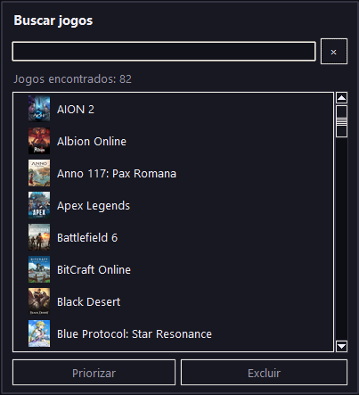

Seu catálogo, suas prioridades
Busque por nome com capas de jogos, monte listas de prioridade e exclusão e salve perfis para alternar entre elas.
Windows · Código aberto
Encontre campanhas, dê prioridade aos jogos que você acompanha e veja o progresso de suas recompensas em um só lugar.
Gratuito · Pacote ZIP portátil · Notas da versão

Busque por nome com capas de jogos, monte listas de prioridade e exclusão e salve perfis para alternar entre elas.
Use o radar para comparar o tempo restante com a janela de cada recompensa. Exporte as datas da agenda em iCalendar.
O Mini HUD flutuante mostra o andamento da recompensa e o tempo estimado, com modo compacto.
Consulte as recompensas confirmadas no diário local, filtre por data e exporte o histórico em CSV.
DropForge.exe e entre pelo navegador em Configurações → Conta Twitch.